時は春、
日は朝 、
朝 は七時、
片岡 に露みちて、
揚雲雀 なのりいで、
蝸牛 枝 に這 ひ、
神、そらに知ろしめす。
すべて世は事も無し。
――ロバアト・ブラウニング／上田敏訳「春の朝」
日は
神、そらに知ろしめす。
すべて世は事も無し。
――ロバアト・ブラウニング／上田敏訳「春の朝」

歩む彼女――わが喜びの貴婦人――
群れ従える羊飼いの女よ。
率いる羊は内心そのもの。純白に保ち、
転げ落ちぬよう護っている。
花かぐわしい丘にて羊に餌をやり、
抱き寄せては寝入らせる。
めぐる彼女――母なる丘と明るくも
暗い谷間を、危なげなく深く。
宵にはあのあたたかいふくらみのうちに
清らかな星々が出でることだろう。
歩む彼女――わが喜びの貴婦人――
群れ従える羊飼いの女よ。
見失わぬ彼女――そのささやかな想いを抱き、
晴れ晴れと走り抜け跳び越えてゆく。
いと思慮深く善良だからこそ
魂を揺るがせまいとする彼女。
歩む彼女――わが喜びの貴婦人――
群れ従える羊飼いの女よ。
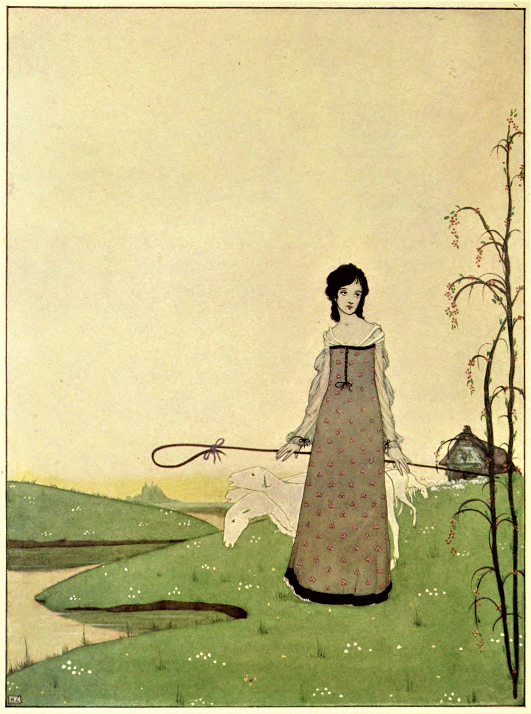
春よ春、
こたびも少女の笑みを。
そのせつなの
のちに少女の涙を！
春よ、どうかわが耳に。
愛しの君にことごとく
わが喜憂を伝えし折には。
春よ春、
こたびも黄金の笑みを。
ただせつなの
のちに黄金の涙も。
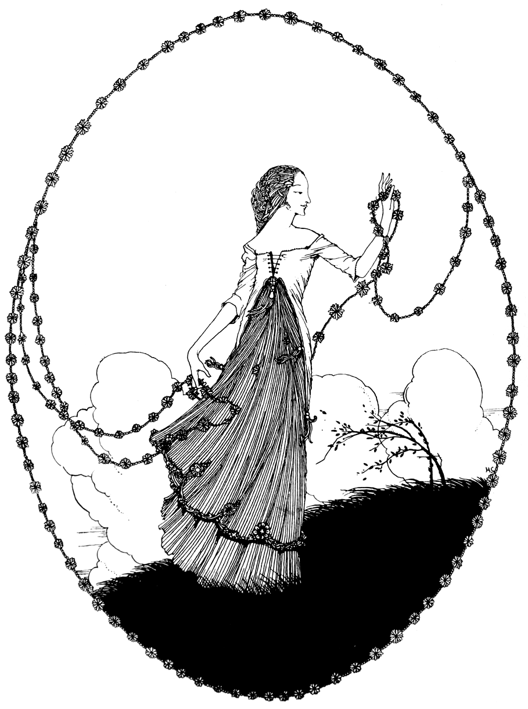
香辛料の木立から
お米の畑を抜け
蓮の浮かぶ小川を越えて
あなたのために運びゆく、
露と雫に濡れながら
ささやかな楽しい夢を。
目をおつむり 愛しい子、
自然のホタルが何匹も
魔法の木をめぐり飛ぶ。
あなたのために
ヒナゲシからくすねてきたよ、
ささやかな楽しい夢を。
かわいいお目々 おやすみね、
金色の光につつまれて
あなたのまわりで星空がきらめく。
やさしく撫でて
あなたにじかに届けたい、
ささやかな楽しい夢よ。
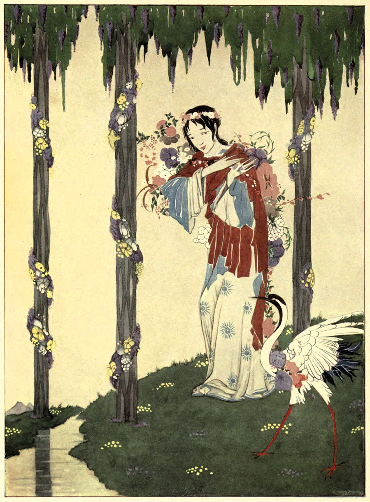
ちゃんとは見れてないんだけど、
森の原っぱで妖精さんのおどるとこ。
あそこの樫の木のうろの裏に
ずらっと草の輪っかが並んでて。
でも、その樫のかげに隠れてたら
あの日は見えそうだったの、あとすこしで！
ちゃんとは見れてないんだけど、
夕暮れの海に人魚の上がってくるとこ。
じめじめの浜辺は日暮れの空で
真っ赤にそまったりしてて。
でも――こっそり、岩場のあいだに――
あの夕べは見えそうだったの、あとすこしで！
ちゃんとは見れてはないんだけど、
こわいゴブリンが納屋に出てきたり
そこの木箱の薄暗い物かげから
頭をぴょこんと出したりするとこ。
でもあのとき――ママが目を上げたりしなけりゃ、
見えそうだったの、あとすこしで、あとすこしで！
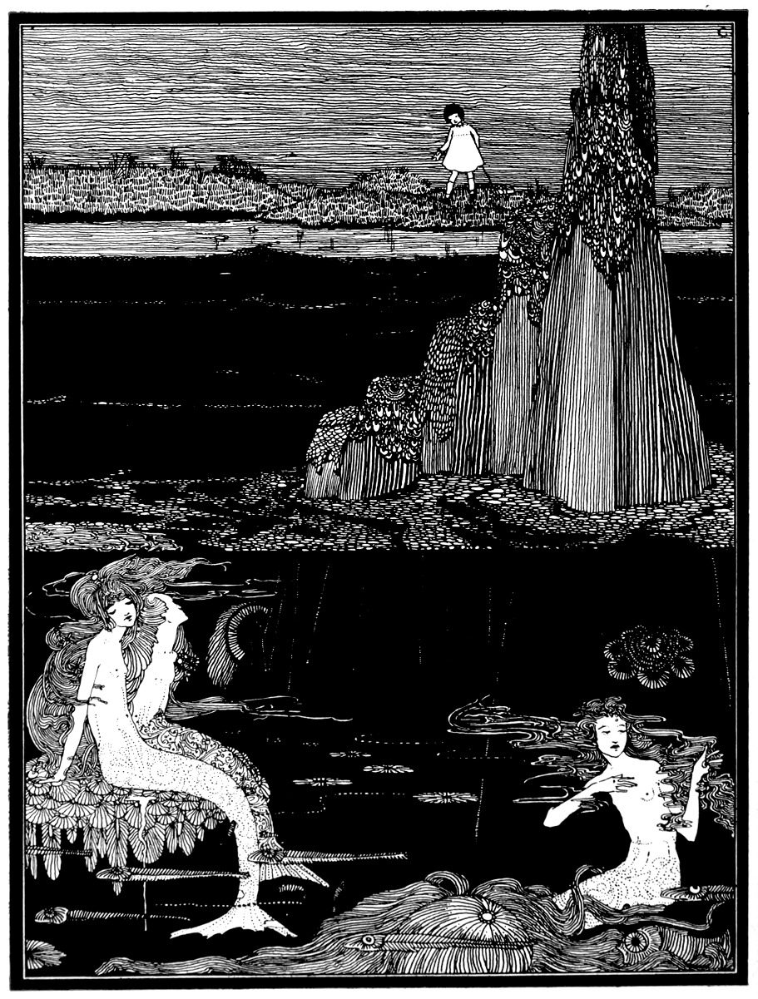
碧ガラスよ、
そいつをおくれよ。
いや。
おくれったら、おくれよ、おいらに。
いや。
だったら葦の原っぱで夜通しわめいて、
泥に寝転びながら、おくれよと叫んでやるぜ。
小鬼さん、そんなに好き好き、どうしたの？
星空よりも水面よりもすばらしいのさ、
吹きすさぶ風の歌声よりも上等ときて、
どんな美しい人の娘よりもきれいとくる、
その銀の環にした碧ガラスのビーズはよお。
やめて。月からくすねてきたのはあたしなの。
なあ、そのビーズおくれよ。ほしいんだよ。
いや。
その碧ガラスのビーズのためなら
深い沼の底からでもわめいてやるさ、それくらい大好きさ。
おくれったら、おくれよ。
イヤ！
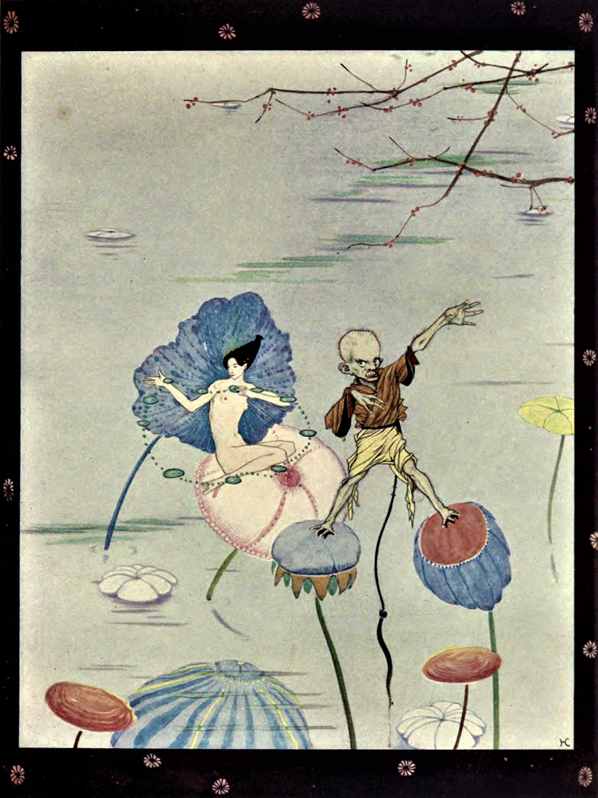
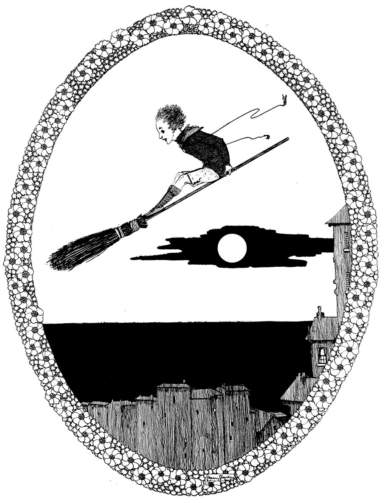
ここにホウキがあればなあ、その乗り方がわかればなあ、
ジェーンがお茶に出ているすきに、この窓から外に飛び出て、
ホウキをあやつりながら煙突屋根の上を越えて抜けていって、
ぼくみたいな足を痛めた子の行けないところへ行くのにな。
そうすればカニだらけの岩場を走ったり海に入ったり、
ほら、むにむにの赤いイソギンチャクは触るとちぢむんだってね。
ここにホウキがあればなあ、その乗り方がわかればなあ、
ここにホウキがあればなあ――松葉杖の代わりに！
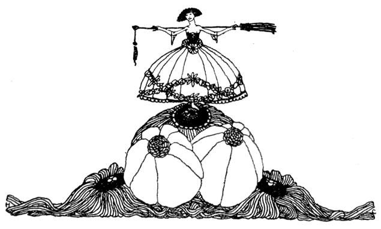
ニシキギさん、ニシキギさん、どうかお貸しになって？
道行きを照らしてくれる、ささやかな手灯しを。
妖精さんたちみんな森の川辺や原っぱからいなくなったから、
あたりを探し回ってまた見つけ出してみたくって。
手灯しをいただけたら、その灯りを手に
夜闇に隠れた小径を見つけてやるんだから。
トネリコさん、トネリコさん、こちらに投げてくださる？
金褐色の鍵が鈴なりに実る、すらりとしたその枝を。
妖精の国への門が何だか早々閉じてしまって、
あなたの魔法の鍵がないと通れないみたいで。
腰のガードルに結んでおけば、歩くだけで
ちりんちりんと音色に心も軽くなったりするから。
モチノキさん、モチノキさん、手助けしてちょうだい。
ポケットいっぱいの木の実のご支援を所望よ。
ポケットいっぱいの木の実をきらきら輪に結べば
（手ぶらでおうかがいする気なんかさらさらないの）
ほら深紅の鎖の出来上り、はなやかきらびやか、
きっと妖精の国みんなで楽しくおどれるんだから。

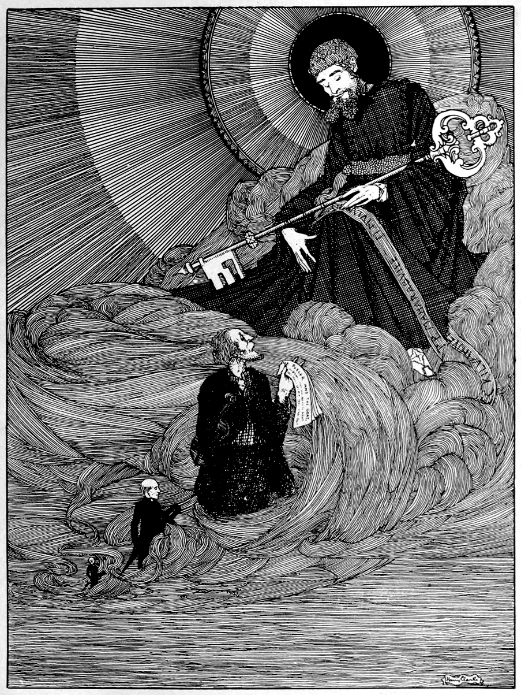
ドゥーニーでおいらがフィドルを構えて弾けば
みんなは海の波のように踊ってくれる。
いとこはキルヴァーネットで僧侶をやってて
きょうだいはモハラブーイに住んでいる。
いとこときょうだいの様子をのぞいてみたら
ふたりは自前の祈祷書を読んでいる。
こちらもスライゴの市であがなった
お気に入りの歌の本を読んでやる。
みんな寿命の最期が来たら
鎮座するペテロに会うわけだけど、
きっとこの老いた三人の霊に微笑んで
まずはおいらに門を通れと呼ぶはずだ。
そりゃ善人は気のいいやつらだから、
不運な目にさえ遭わなければね。
陽気なやつらはフィドルが大好き、
陽気なやつらは踊るのも好き。
天国のやつらがおいらを見つけりゃ
みんなしてこっちに集まってきて
「ドゥーニーのフィドル弾きがいるぞ！」
あとは海の波のように踊るわけさ。
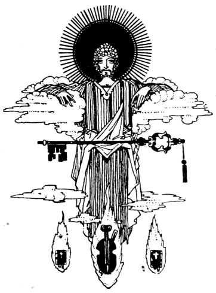
吹き鳴らせ、喇叭隊よ、あの立派な死者一同へ。
かねてより切なくもひもじくもないところだが
死のきわには、金より価値ある餞別となる。
この世を去らせ、若さという甘美な赤ワインを
そそがせ、日々を勤めと喜びに捧げさせたのは、
それこそ思いも寄らぬ穏やかなるもの、
いわゆる生涯なるもの。ゆくゆくは同じゅうする
倅たちに、不滅のものを継がせた死者らよ。
吹け喇叭よ、吹け！ おかげでわれらの喪失にも
長らく欠いた聖浄と、愛と痛みとが届いた。
誉れの化身が王として地に帰り来たって、
臣下たちに直々褒美を下賜なさった。
かくしてわれらの道行きは再び気高く、
おのれ自ら後世の遺産となった次第。
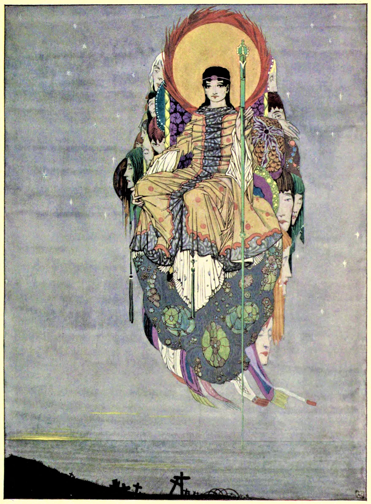
これほど愛をくださるおかたは他にない、
万象に神は宿り 万物はわが半身。
わたしはなだらかな丘を転がるもの、
大平原から下へ下へ。
わたしの生まれは一千の嵐、
豪雨のせいで濁ってしまう。
わたしがともに立つのは万年岩、
かぐわしい草花も咲き誇る。
わが戦友は風雨に痛むモミの林、
実が熟してくるとしだれがち。
わが遠見のつきあいはおごそかな雲、
荒野の沼地とまどろんでいる。
わが競争相手は水の急流、
その激流の冷めるあたりで寝転がる。
翼の丈夫な鳥のごとく舞いながら、
わたしも獲物を見つけると飛びかかる。
わが目覚めの友だちは薄暗く寒い夜明け、
消えゆく日のなかにも燃え上がる。
なぜなら万象に神は宿り 万物はわが半身、
これほど愛をくださるおかたは他にない。
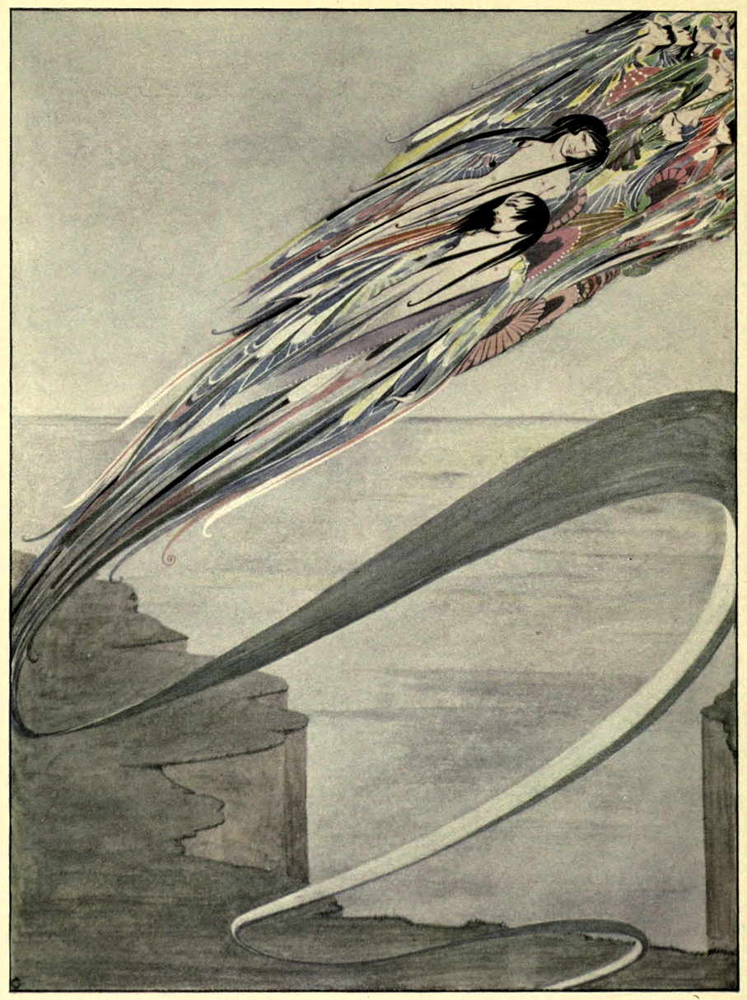